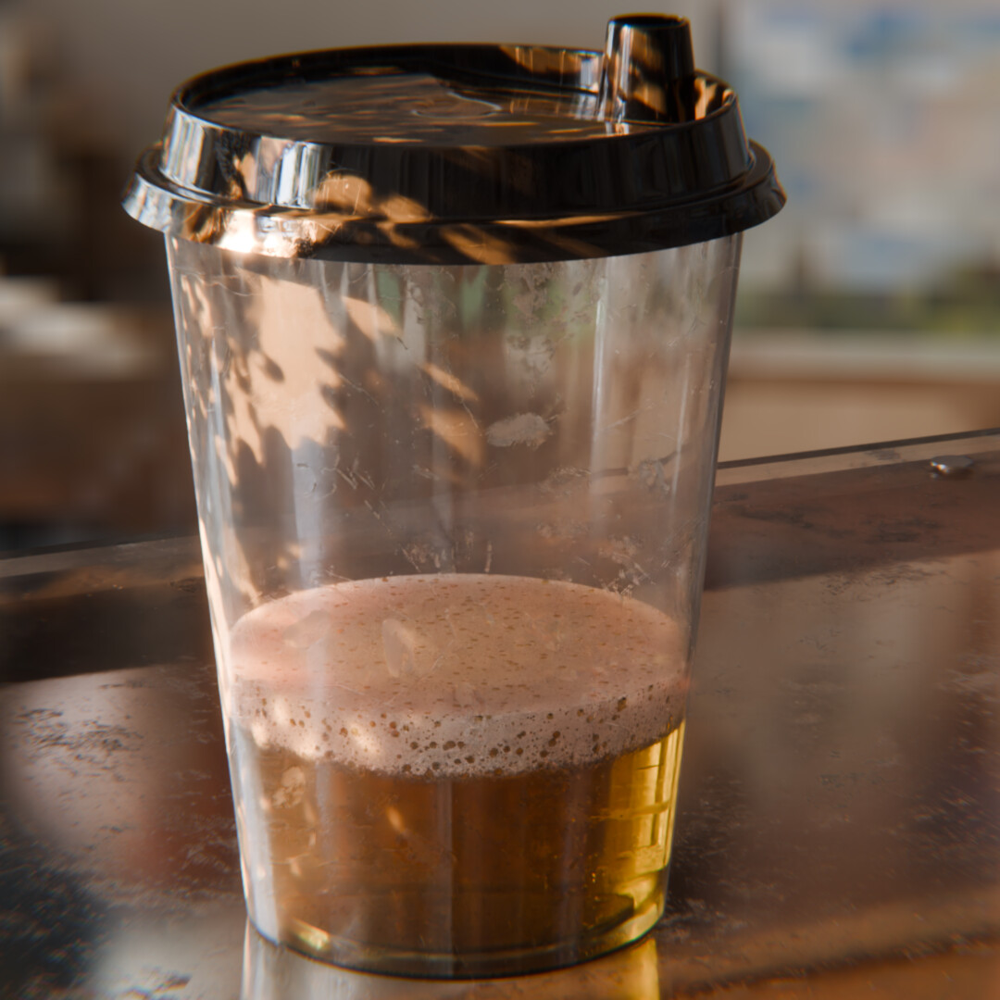

Coffee or Beer?
A little beverage study — one glass, two moods. I focused on believable translucent liquid, foam, condensation and soft daylight coming through the window. Everything modeled, shaded and lit in Blender.
BlenderFluids & translucencyDaylight study
